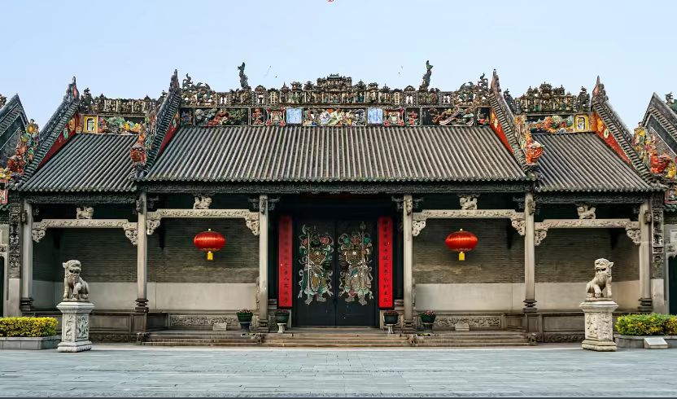

传奇：广州陈家祠，又称"陈氏书院"，位于广州市荔湾区中山七路，始建于清光绪十四年（1888年），光绪二十年（1894年）落成，是广东现存规模最大、保存最完好、装饰最精美的祠堂式建筑，被誉为"岭南建筑艺术明珠"。原是广东省七十二县陈姓族人捐资合建的宗族祠书院，是广东省各地陈氏宗族子弟赴省城应考、诉讼、议事等事务的临时居所。1988年被列为全国重点文物保护单位，2002年被评为"新世纪羊城八景"之一，2017年被评为国家一级博物馆。
核心看点：
游览攻略：
交通信息：陈家祠位于广州市荔湾区中山七路恩龙里34号。地铁1号线、8号线"陈家祠"站D出口直达。公交85、88、104、107、109、114、125、128、193、204、233、250、260、268、286、旅游1线、旅游2线等到"陈家祠"站。距广州站3公里，车程10分钟；距广州南站15公里，车程30分钟；距白云机场30公里，车程50分钟。周边有荔枝湾、上下九步行街、沙面、永庆坊等景点。建议与西关大屋、荔湾博物馆组合游览。
筹建背景：清光绪年间，广东省内陈姓族人众多，但无统一的宗族祠书院。光绪十四年（1888年），广东新会县举人陈昌朝、陈宗询等倡议，联合广东省内72县陈姓族人，在广州集资兴建"陈氏书院"，作为各地陈姓子弟赴省城参加科举考试、办理诉讼、议事联谊的场所。这一倡议得到各地陈姓族人响应，共募集白银20余万两。
建设过程：光绪十四年（1888年）四月，陈氏书院动工兴建。聘请当时广州最著名的建筑师黎巨川主持设计，集结全省能工巧匠施工。建筑材料精选各地优质材料：石料来自肇庆端溪，木材来自南洋，砖瓦来自东莞，陶塑来自佛山石湾。工程历时6年，光绪二十年（1894年）落成。共建有大小厅堂、厢房、斋舍、廊庑等19座建筑。
功能演变：陈氏书院建成后，主要功能有：①宗族联谊：各地陈姓族人聚会、祭祖；②科举服务：为陈姓子弟提供住宿、学习场所；③议事仲裁：处理族内纠纷、诉讼；④慈善公益：救济贫困族人。清末科举废除后，书院功能逐渐转变。民国时期，曾作为学校、工厂、难民收容所。
保护历程：1950年，广州市政府接管陈氏书院。1957年，进行大规模维修。1959年，辟为"广东民间工艺馆"，收藏展示广东民间工艺品。1988年，被列为全国重点文物保护单位。1994年，更名为"广东民间工艺博物馆（陈家祠）"。2002年，进行全面维修，历时三年。2017年，被评为国家一级博物馆。
建筑特色：陈氏书院是岭南祠堂建筑的典范。①布局：采用"三进三路九堂两厢杪"的典型广府祠堂布局；②结构：抬梁与穿斗混合式木构架，青砖墙，花岗岩石脚；③装饰：集"三雕（石雕、木雕、砖雕）两塑（陶塑、灰塑）一铸（铁铸）"于一体，是广东民间装饰艺术的集大成者；④功能：既是祠堂，又是书院，体现"祠学合一"的特色。
文化意义：陈氏书院是广东陈氏宗族文化的象征。①宗族文化：体现"慎终追远"的儒家思想；②科举文化：反映清代科举制度在广东的影响；③建筑文化：代表岭南建筑艺术的最高成就；④工艺文化：展示广东民间工艺的精湛技艺。陈氏书院是研究广东社会、文化、建筑、艺术的重要实物。
总体布局：陈家祠坐北朝南，采用典型的广府祠堂布局。①三进：前座（头门）、中座（聚贤堂）、后座（祖堂）；②三路：中路为主轴线建筑，东西两路为厢房、斋舍；③九堂：包括头门、聚贤堂、祖堂及两侧厅堂；④两厢杪：东西两侧的厢房。整组建筑以聚贤堂为中心，左右对称，前后呼应，形成严谨有序的空间序列。
石雕艺术：陈家祠石雕主要集中在头门、月台、廊庑等处。①石鼓：头门前一对，高2.55米，为广东现存最大的祠堂石鼓；②石栏杆：聚贤堂月台石栏杆，长13.5米，雕有"三羊启泰""金玉满堂"等图案；③石柱础：形式多样，有鼓形、方形、八角形等，雕刻精美；④石台阶：垂带石雕有狮子、麒麟等瑞兽。石雕采用端溪青石，质地细腻，适合精细雕刻。
木雕艺术：陈家祠木雕数量达千件之多。①屏门：首进头门四扇木雕屏门，高5米，采用镂空雕、浮雕相结合；②梁架：聚贤堂梁架施以金漆木雕，富丽堂皇；③花罩：各厅堂之间的花罩，雕有葡萄、松鼠等，寓意"多子多福"；④挂落：廊庑挂落雕有梅兰竹菊等文人题材。木雕选用南洋坤甸木、东京木等优质木材，耐腐防虫。
砖雕艺术：陈家祠砖雕是岭南砖雕的代表作。①大型砖雕：首进东、西厢房山墙上各六幅，每幅有数十个人物，场面宏大；②墀头砖雕：建筑转角处的墀头，雕有狮子、花篮等；③檐下砖雕：在檐下位置，雕有博古、花卉等图案。砖雕采用东莞青砖，雕刻深度达5-6层，立体感极强，被称为"挂线砖雕"。
陶塑脊饰：陈家祠陶塑脊饰由佛山石湾文如璧、宝玉荣等店号制作。①题材：多为历史故事、神话传说，如"群仙祝寿""郭子仪祝寿""六国大封相"等；②工艺：采用贴塑技法，人物、景物分层粘贴，立体感强；③釉色：以黄、绿、宝蓝为主，间以褐、白等色，鲜艳夺目；④规模：11条脊饰总长165米，人物上千个，是广东现存规模最大的陶塑脊饰群。
灰塑铁铸：①灰塑：遍布屋脊、山墙、檐廊，题材有祥禽瑞兽、花卉果木、山水人物等，采用彩色灰塑，不怕日晒雨淋；②铁铸：首进头门铁铸通花栏板，聚贤堂月台铁铸栏板，工艺精湛，是广东铁铸艺术的精品。灰塑、铁铸与石雕、木雕、砖雕、陶塑共同构成陈家祠装饰艺术的"五绝"。
宗族文化：陈家祠是广东陈氏宗族文化的集中体现。①祭祀文化：后进祖堂供奉陈氏祖先牌位，体现"慎终追远"的儒家思想；②族谱文化：收藏各地陈氏族谱，记录陈氏源流、迁徙、世系；③联谊文化：为各地陈姓族人提供聚会、交流场所；④教育文化：为陈姓子弟提供学习、应试服务。陈家祠是广东宗族社会的缩影。
科举文化：陈家祠与清代科举制度密切相关。①功能：为陈姓子弟提供科举考试的住宿、学习场所；②装饰：建筑装饰中有"渔樵耕读""状元及第"等科举题材；③人物：陈姓族人中多有科举及第者，如陈昌朝、陈伯陶等；④影响：反映了科举制度在广东的深远影响。陈家祠是研究广东科举文化的重要实物。
民间工艺：陈家祠是广东民间工艺的博物馆。①展览：广东民间工艺博物馆收藏有陶瓷、刺绣、雕刻、漆器等各类工艺品上万件；②工艺：包括广彩、广绣、牙雕、玉雕、木雕、石雕、砖雕、灰塑、陶塑、剪纸等；③传承：展示广东传统工艺的制作工艺、历史发展、艺术特色；④交流：举办各类工艺展览、学术研讨、技艺传承活动。
民俗文化：陈家祠是广州民俗活动的重要场所。①节庆：春节、元宵、端午、中秋等传统节日，举办灯会、庙会、展览等活动；②非遗：展示广府非遗项目，如粤剧、广东音乐、醒狮等；③体验：开设非遗体验课，让游客亲身体验传统工艺；④研究：开展民俗文化研究，出版相关著作。陈家祠是广州民俗文化的活态展示馆。
建筑文化：陈家祠是岭南建筑文化的代表作。①布局：典型广府祠堂布局，体现礼制思想；②结构：穿斗与抬梁结合，适应岭南气候；③装饰："三雕两塑一铸"，集民间装饰艺术之大成；④环境：建筑与庭院结合，形成宜人空间。陈家祠被誉为"岭南建筑艺术的教科书"。
现代传承：陈家祠在当代得到有效保护和传承。①博物馆：1959年辟为广东民间工艺博物馆，收藏、研究、展示民间工艺；②教育：开设社会教育课程，传承传统文化；③旅游：成为广州重要旅游景点，年接待游客百万人次；④文创：开发陈家祠文创产品，让传统文化走进现代生活；⑤研究：成立陈家祠研究中心，开展建筑、艺术、历史研究。陈家祠是传统文化现代转型的成功范例。
历史价值：陈家祠是晚清广东社会历史的见证。①社会史：反映清代广东宗族社会的组织、功能、活动；②建筑史：代表晚清广府祠堂建筑的最高成就；③工艺史：展示晚清广东民间工艺的发展水平；④文化史：体现岭南文化的特色和内涵。陈家祠是研究晚清广东历史、社会、文化、艺术的"活化石"。
艺术价值：陈家祠是岭南建筑艺术的巅峰之作。①建筑艺术：布局严谨，结构科学，装饰精美，是建筑艺术的典范；②雕刻艺术：石雕、木雕、砖雕技艺精湛，题材丰富，是雕刻艺术的宝库；③雕塑艺术：陶塑、灰塑造型生动，色彩艳丽，是雕塑艺术的杰作；④装饰艺术：集多种装饰手法于一体，和谐统一，是装饰艺术的集大成者。陈家祠被誉为"岭南建筑艺术的明珠"。
科学价值：陈家祠蕴含丰富的科学技术。①建筑科学：木结构、砖石结构技术，适应岭南湿热气候；②材料科学：石材、木材、砖瓦、陶土等材料的选用和处理技术；③工艺科学：雕刻、塑作、铸造等工艺技术；④保护科学：古建筑保护、修复技术。陈家祠是研究传统建筑科学技术的宝贵实例。
文化价值：陈家祠是岭南文化的重要载体。①宗族文化：体现中国传统的宗族观念、家族制度；②科举文化：反映科举制度在广东的实施和影响；③民俗文化：展示广府地区的民俗风情、生活习惯；④工艺文化：传承广东民间工艺技艺、审美观念。陈家祠是岭南文化的"百科全书"。
社会价值：陈家祠在当代社会具有多重价值。①教育价值：是爱国主义教育基地、传统文化教育基地；②旅游价值：是广州重要的文化旅游景点，年接待游客百万人次；③研究价值：是建筑、艺术、历史、民俗等多学科研究的重要对象；④文化价值：是广州城市文化名片，增强文化自信。陈家祠是广州的文化地标和精神象征。
保护与传承：陈家祠得到科学保护。①法律保护：1988年列为全国重点文物保护单位；②规划保护：编制《陈家祠保护规划》，划定保护范围、建设控制地带；③工程保护：1957年、2002年两次大规模维修，恢复历史原貌；④日常维护：建立专业维护团队，定期检查、保养；⑤研究展示：成立陈家祠研究中心，出版《陈家祠》《岭南建筑艺术明珠》等著作；⑥活态传承：举办展览、讲座、体验活动，让文物"活"起来。陈家祠的保护经验，为古建筑保护提供了成功范例。